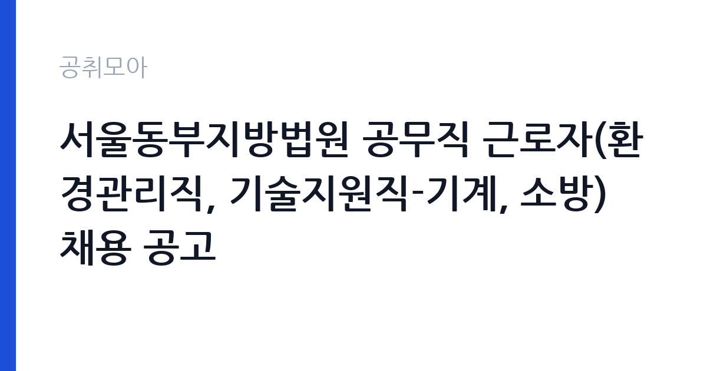

[국가기관] 서울동부지방법원 공무직 근로자(환경관리직, 기술지원직-기계, 소방) 채용 공고
대법원 서울동부지방법원 · 서울 · 마감 2026-10-29 (D-21) · 출처 나라일터

한눈에 보는 모집 조건
| 기관 | 대법원 서울동부지방법원 |
|---|---|
| 공고명 | 서울동부지방법원 공무직 근로자(환경관리직, 기술지원직-기계, 소방) 채용 공고 |
| 고용형태 | 공무직 |
| 근무지 | 서울 |
| 게시일 | 2026-10-08 |
| 마감일 | 2026-10-29 (D-21) |
지원자격, 이렇게 읽으세요
- 환경관리직 1명 기술지원직(기계) 2명 기술지원직(소방) 2명
- 접수 ~2026-10-29 마감
- 세부 조건은 원문 공고문 확인
환경관리직은 법원 청사 내외부 청소와 환경 정비, 미화 작업을 담당하며 청소 업무 수행에 지장이 없는 신체 조건이 요구됩니다. 기술지원직(기계·소방)은 청사 기계 설비와 소방 시설의 점검·관리를 맡으므로 관련 자격증이나 실무 경험이 있으면 유리합니다. 응시 연령은 만 18세 이상으로 정년(만 65세)에 도달하지 않은 분이 대상이며 학력과 성별 제한은 없습니다. 과거 동부지법 공고에서는 청소·미화 경력자와 저소득층, 장애인, 국가유공자를 우대했으니 이번 공고의 우대 조건도 확인하십시오. 접수 기간이 10월 26일부터 29일까지로 짧으니 서류를 미리 갖춰 두십시오.
이 공고의 포인트
이 공고의 포인트는 한 번에 5명을 뽑는 법원 공무직이라는 점입니다. 법원 공무직은 정년 만 65세까지 보장되는 무기계약으로, 기본급에 정액급식비와 명절상여금, 복지포인트, 법정수당이 더해지는 구조입니다. 환경관리직은 경력과 학력 부담 없이 지원할 수 있어 진입 장벽이 낮고, 기술지원직은 자격증을 살릴 수 있는 자리입니다. 서울동부지방법원은 성동구에 위치해 서울 동부권과 경기 동부 거주자에게 통근이 편리합니다. 8월에도 동일 직렬을 모집해 합격자를 발표한 이력이 있어 채용 수요가 꾸준한 기관이기도 합니다.
전형은 어떻게 진행되나
전형은 서류전형과 면접시험으로 진행됩니다. 8월 실시된 동일 직렬(환경관리직·기술지원직) 채용도 서류와 면접 구조였으며, 서류 합격자 발표 후 면접시험 안내가 법원 홈페이지 새소식란에 게시되었습니다. 서류전형에서는 지원자격 충족 여부와 직무 연관 경력, 자기소개서를 평가합니다. 수습 기간 3개월이 있으며, 수습 중 업무수행 능력 부족이나 직무수행 태도 불량으로 계속 근로가 어렵다고 인정되면 정식 채용이 되지 않을 수 있으니 합격 후에도 성실한 근무가 중요합니다. 원서 접수 기간은 2026년 10월 26일부터 10월 29일까지입니다.
원문에서 확인한 전형 방식
1. 채용분야 : 공무직 근로자(환경관리직-장애, 기술지원직-영선) 2. 원서접수기간 : 2026.10.26.(월)~2026.10.29.(목) 3. 근로계약 기간 - 정년까지 기간의 정함이 없는 근로 계약 - 수습기간 : 근로계약 시작일로부터 3개월 - 정식채용 : 수습기간 종료일의 다음날 부터 - 수습기간 중 업무수행능력 부족 및 직무수행태도 불량 등으로 계속 근로하기 어렵다고 인정되는 경우 정식채용이 되지 않을 수 있음 4. 근무시간 : 주5일, 1일 8시간(업무특성상 법정근로시간 내에서 방재센터 교대근무, 야간 및 휴일 근무시간 등은 기관 사정에 따라 편성 및 변동 될 수 있음) 5. 보수 - 법정근로시간을 준수하여 예산의 범위 내에서 결정 - 정액급식비, 명절상여금, 복지포인트, 각종 법정수당 등 관련 규정에 의거 별도 지급 자세한 사항은 첨부 모집 공고를 참고
이런 분께 추천해요
- 청소와 미화, 시설 관리 업무 경험이 있고 안정적인 일자리를 원하시는 분께 추천합니다.
- 전기·기계·소방 자격증을 보유하고 법원 기술지원직으로 근무하고 싶으신 분께 적합합니다.
- 서울 동부권에 거주하시며 정년까지 근무할 수 있는 공무직을 찾는 분께 좋은 기회입니다.
지원 전 체크리스트
- 지원 분야(환경관리·기계·소방) 중 본인의 경력과 자격에 맞는 분야를 선택하십시오. 중복 지원 가능 여부는 공고문에서 확인하십시오.
- 정년(만 65세) 초과 여부와 즉시 근무 가능 여부를 점검하십시오.
- 자격증 사본과 경력증명서를 미리 발급받아 두십시오. 우대 조건 해당자는 증빙 서류를 빠짐없이 준비하십시오.
- 접수 기간이 10월 26일부터 29일까지로 나흘에 불과하므로 접수 첫날 제출을 목표로 준비하십시오.
모집 일정과 제출 타이밍
원서 접수 기간은 2026년 10월 26일부터 10월 29일까지 나흘간입니다. 접수 시작 전에 자기소개서와 증빙 서류를 완성해 두시고 접수 첫날 제출하는 것을 권장합니다. 서류전형 합격자 발표와 면접시험 안내는 서울동부지방법원 홈페이지 새소식란에 게시됩니다. 8월 채용 시에는 서류 합격 발표 후 면접까지 일주일 내외로 진행되었으므로, 접수와 동시에 면접 준비를 시작하십시오. 최종 합격 후에는 신원조사와 함께 즉시 근무가 가능한 일정을 유지하셔야 합니다.
직무 이해하기: 국가기관
환경관리직은 법원 청사 내외부 청소와 정기 왁스 작업, 청사 주변 환경 정비와 미화, 조경 보조 업무를 담당합니다. 기술지원직(기계)은 냉난방과 급배수, 전기 설비의 점검과 유지보수를, 기술지원직(소방)은 소방 시설 점검과 방재센터 교대근무를 수행합니다. 법원 청사는 민원인과 재판 업무가 이뤄지는 공간이므로 쾌적한 환경 유지와 설비 안전이 중요합니다. 주 5일 일 8시간 근무가 기본이며, 방재센터 교대와 야간·휴일 근무는 기관 사정에 따라 편성될 수 있습니다. 민원 응대 예절과 보안 의식도 함께 요구됩니다.
자기소개서 작성 팁
자기소개서에서는 해당 분야의 실무 경험을 구체적으로 기술하십시오. 환경관리 지원 시에는 담당했던 시설 규모와 청소·미화 업무 내용, 위생 관리 경험을 쓰시고, 기술지원 지원 시에는 다뤄본 설비와 점검·보수 실적을 수치와 함께 제시하십시오. 법원이라는 근무 환경에 대한 이해(민원 응대·보안 의식·품위 유지)를 언급하시면 좋은 평가를 받을 수 있습니다. 장기 근무 의지와 성실성을 강조하고, 우대 조건(관련 경력·저소득층·장애인·국가유공자)에 해당하면 증빙과 함께 명시하십시오.
면접 준비 포인트
면접에서는 직무 수행 능력과 근무 지속 의지, 인성을 확인합니다. 환경관리 분야는 청소 업무에 대한 이해와 체력, 성실성을 묻는 질문이 나오며, 기술 분야는 설비 고장 대응과 안전 관리 지식을 확인합니다. 법원 직원으로서 민원인 응대 태도와 보안 의식에 대한 질문도 예상되므로 답변을 준비하십시오. 수습 3개월의 의미를 언급하며 합격 후에도 배우는 자세로 임하겠다는 의지를 보이시면 좋습니다. 복장은 단정하게, 답변은 짧고 명확하게 하시길 권장합니다.
급여·근무조건 읽는 법
보수는 법정근로시간 준수 하에 예산 범위 내에서 결정되며, 정액급식비와 명절상여금, 복지포인트, 각종 법정수당이 관련 규정에 따라 별도로 지급됩니다. 참고할 만한 법원 공무직 보수 자료로, 의정부지방법원 공무직(환경관리원) 공고에는 일근 환경관리원 1등급 기준 월 기본급 1,853,830원(주 40시간·주휴수당 포함, 최저임금 연동)이 명시되어 있습니다(출처: 의정부지방법원 채용 공고). 서울동부지법의 직급별 기본급은 이번 공고의 첨부 모집 공고에서 확인하셔야 합니다. 정년은 만 65세이며 4대보험에 가입됩니다. 경쟁률과 합격선은 공개되지 않았습니다.
자주 묻는 질문
- 환경관리직과 기술지원직의 차이는 무엇입니까?
환경관리직은 청사 청소와 환경 정비, 미화 작업을 담당하며 별도 자격증 없이 지원할 수 있습니다. 기술지원직(기계·소방)은 설비 점검과 유지보수를 맡으며 관련 자격증이나 실무 경험이 있으면 유리합니다. 보수 등급도 직급에 따라 다르니 공고문에서 대조하십시오. - 수습 기간은 어떻게 운영됩니까?
근로계약 시작일로부터 3개월이 수습 기간이며, 종료일 다음 날부터 정식 채용됩니다. 수습 중 업무수행 능력 부족이나 직무수행 태도 불량으로 계속 근로가 어렵다고 인정되면 정식 채용이 되지 않을 수 있습니다. - 접수 기간이 짧은데 주의할 점은 무엇입니까?
접수는 10월 26일부터 29일까지 나흘간만 운영됩니다. 접수처와 접수 방법(방문·우편·온라인)을 공고문에서 미리 확인하고, 증빙 서류는 접수 시작 전에 모두 발급받아 두십시오. 마감일에는 혼잡이 예상되므로 첫날 제출을 권장합니다.
함께 보면 좋은 공고
[국가기관] 26년 서초경찰서 무기계약직 근로자[시설관리] 채용 공고문[제 2026-4호] — 마감 2026-10-19[국가기관] 행정안전부 대변인실 디지털소통팀 공무직근로자(행정실무원, 장애인구분) 채용 공고 — 마감 2026-10-20[국가기관] 2026년 제8회 국립공주대학교 대학회계직원 채용 공고 — 마감 2026-10-15출처: 나라일터 공개정보를 바탕으로 공취모아가 정리한 안내글입니다. 모집 조건·일정은 변경될 수 있으니 지원 전 반드시 원문 공고문을 확인하세요. 본 글은 정보 제공용이며 합격을 보장하지 않습니다.